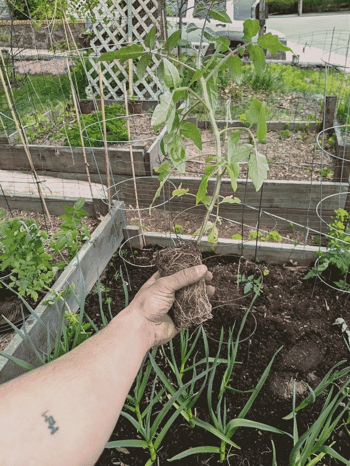

Now
This is the first entry in what I hope will be recurring format. It's an experiment in a different organizational structure on {mmx} to move from topic-based organization on the site to regular writing that spans different projects and interests. I've updated pages less often than I thought I would, mainly because of how distributed the content is across the site. I think this sort of diary-tag-entity relationship is how all those hot tools like Roam and others do it (is it the zettel-whatever pattern?). Topics can have their own content but will also be supplemented with extractions from other page's references to those content. This already happens, but it's hidden at the bottom of a page in a details tag. I'm also interested to see if topic pages can be created without being explicitly defined. This change will need some small technical changes in mmx, but minor in the scheme of things. I am glad at how general-purpose mmx is, and pulling out some of the last technical idiosyncrasies will be a welcome refactor.
The {garden} is thriving. Most of my indoor starts are in the ground, and I've been sowing directly hot-weather veg (cucumbers, pumpkins, etc) and succession plantings when there's time. Some things I experimented with this year: companion planting (i.e. using pungent herbs and onions with pest-prone arugula), keeping the agricultural fabric up, even in warm weather as shade and pest control. I'm getting regular raddish harvests, and hopefully spinach and peas soon. 
{kind=link}